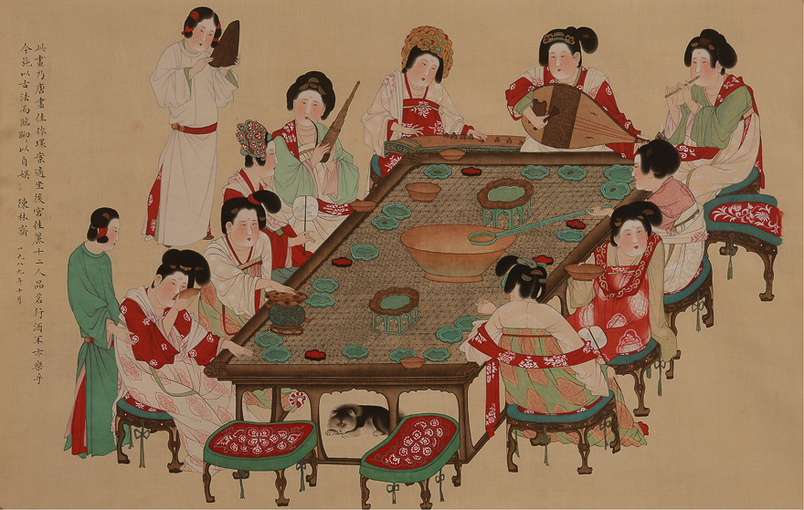
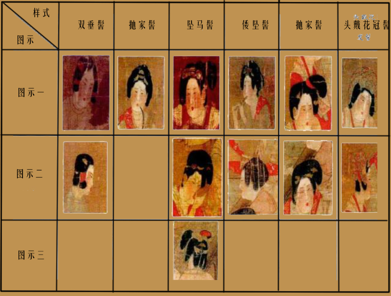

《唐人宫乐图》描绘了唐代宫廷仕女宴乐生活的一个场面。画面桌子的周围，坐着仕女九人，左方立着侍奉的女孩两人，桌上陈列着蔬果、酒具，有的饮酒，有的作乐，女孩立在后面打拍板，有的弹琵琶，有的鼓瑟，有的吹笙，有的吹管子。从人的表情上看，该画作仿佛表现了一只曲子演奏得正浓的一刹那。
《唐人宫乐图》中十二位仕女髻式总共有六种：双垂髻、抛家髻、高髻、坠马髻、坠倭髻、头戴花冠髻式。其中站立的2位仕女发髻为双垂髻。梳坠马髻的仕女为四位：画面上半部分弹奏琵琶仕女，画面左下角品茗仕女，画面右边背对观者仕女和端茶仕女。梳抛家髻仕女为1位：画面左下角第2位行酒令仕女。梳高髻仕女为1位：画面右边吹笙侍女。梳坠倭髻仕女为2位：画面右上部分吹奏乐器的仕女与其旁的手持长柄勺仕执团扇女。头戴花冠髻式仕女为2位：画面左上部分弹筝仕女与手执团扇仕女。
